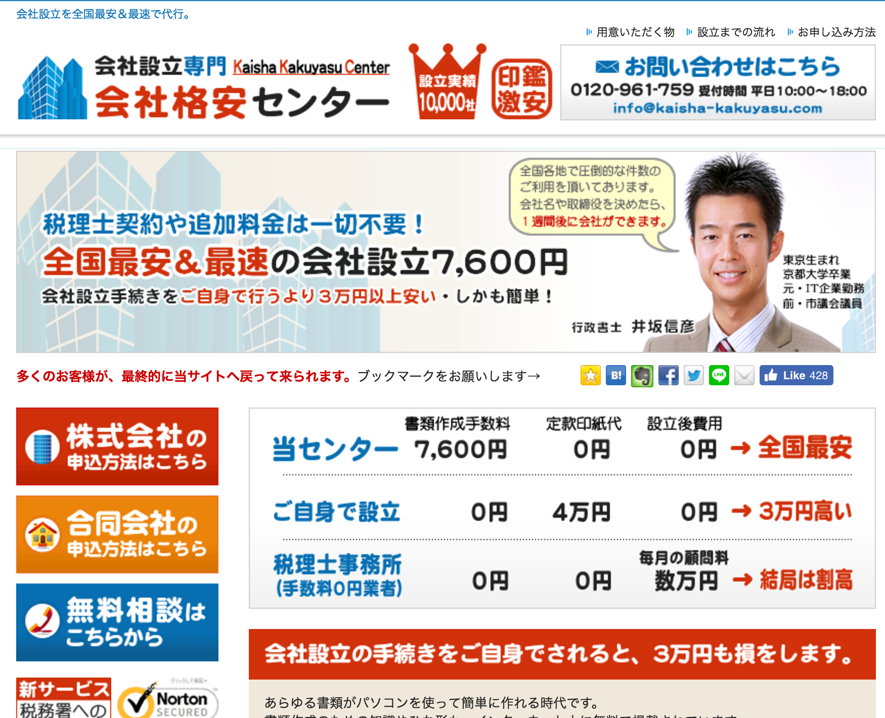
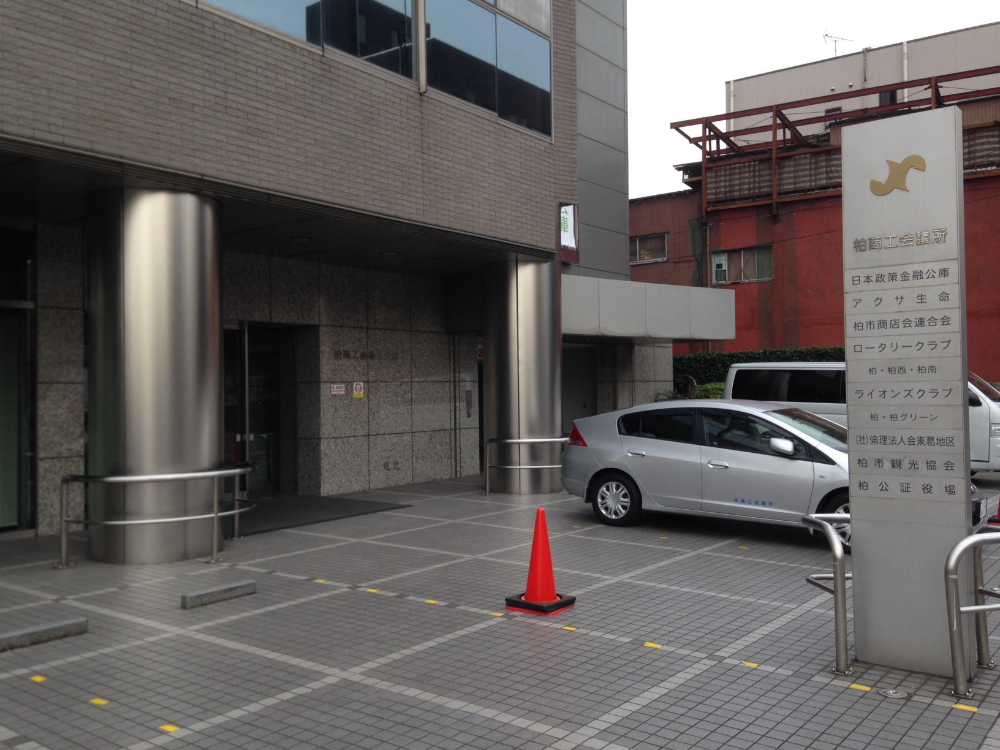
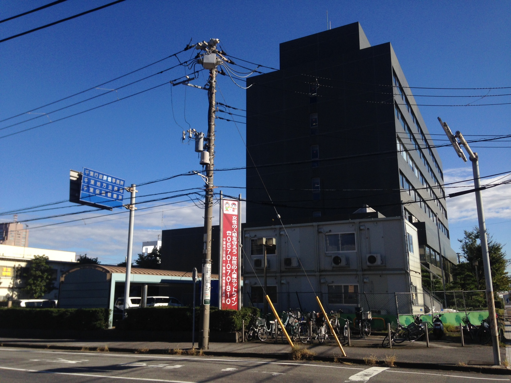

本日、無事に会社を設立することができたのですが、手続きについて一通りまとめてみたいと思います。Tips集とまではいきませんが、参考にしてみてください。
設立に要した・・・
期間：５日間
費用：計223,028円
労力：★★☆☆☆
いやあそれにしても会社の登記を完了するだけでこんなに費用がかかるとは思っていませんでした。。。資本金は1円から会社なんて設立できるよと聞いていたのですが。。。現実問題として、資本金などはその通りなのですが、手数料が20万円以上かかるというのが思わぬ落とし穴でした。インターネットでいろいろ調べて手続きをしたのですが、この費用はほぼ最安値レベルのようです。政治家の皆さんに言いたい。起業にかかるコスト高すぎでしょ、と。日本経済の新陳代謝を高めたいならこのよくわからない価格体系を速攻改めてください。そのような公約を掲げられている政治家の方に一票入れさせていただきますので！
と、まあこのへんにしときまして、手続き全般の流れについて概要を説明したいと思います。今回は会社の設立が初めてで右も左もわからない状況でしたので、インターネットで調べて出てきたその名も「会社格安センター株式会社」さんのサービスを利用させていただきました。インターネットで申し込んだだけだったのですが、すべての対応が神対応レベルに先回りされていまして、オススメのサービスです。機会があれば皆さんも是非使ってみてください。
①会社格安センター株式会社宛に申し込む
→メールが返信されてくるので、それに答える形で返信すればOK! 返信するとその翌々日くらいに資料一式が送られてきますので、それをもとに手続きを進めていくことになります。私は会社の印鑑も頼んだので総額21,168円かかりましたが、手続き代そのもは8,208円とむちゃ安いです。ただ、そのあとの手続きを楽にするためにも、会社の印鑑はこのタイミングで一緒に頼んでおいたほうがいいかもしれません。

会社格安センター（株）さんのホームページ②市役所で印鑑登録をして、証明書を受け取る。
③公証役場に行き、定款を受け取る。（事前予約が必要）※手数料がここで5万円ほどかかりました。

千葉県柏市の公証役場④法務局に行き、手続き書類一式を収入印紙15万円分とともに納付。（事前予約は不要）

千葉県の法務局＠千葉みなと
実際に②〜④でかかる時間はそれぞれ5分から10分程度でしたので、拍子抜けするほど窓口で何もしなかったです。事前に印鑑をパタパタ押すのが少々多かったですが、頼んだ印鑑で「会社格安センター株式会社」さんが既に一部の書類に捺印してもらっており（頼んでいないのに！まさに神対応！）、かなり楽でした。
上を見てもらえば分かりますが、結局③と④で20万円以上かかっており、かつこの価格は業者を選ぶ話ではないので節約できない、言い返せば、必ずかかってくる費用になってくるようです。なのでまあおおよそこのくらいのコストがかかるのだなあと知っていただけましたら幸いです。少し間をおいて、次回の記事では登記完了後の手続きについてまとめたいと思います。乞うご期待ください！